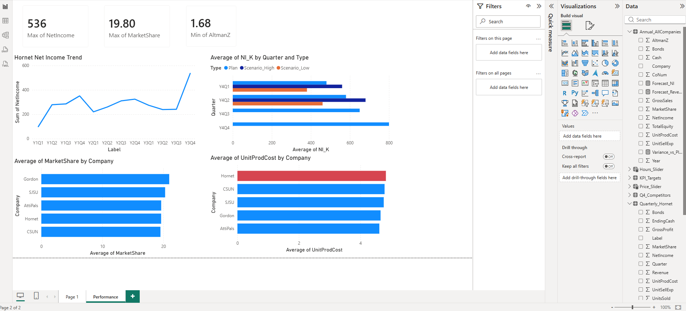
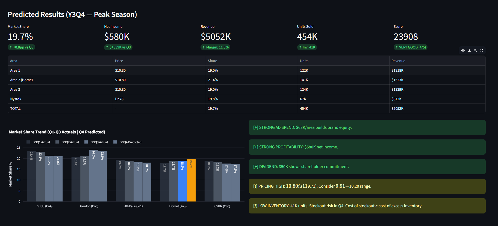
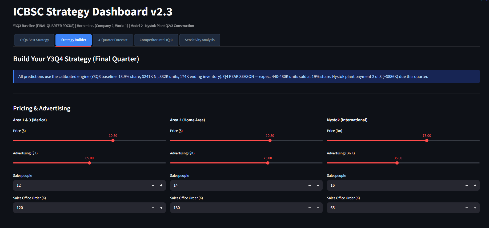
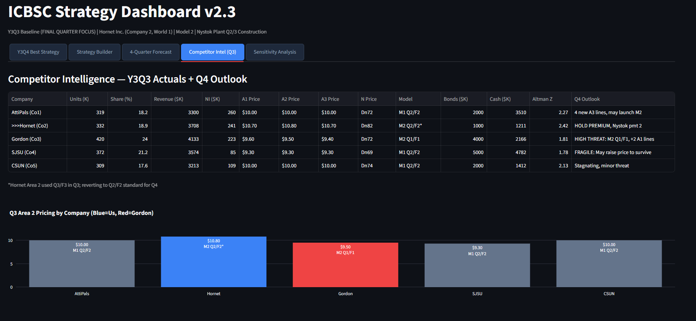

Business simulation competition · quarterly forecasting, strategy, and financial analysis across 4 universities
Built an interactive Power BI dashboard tracking 12 quarters of Hornet Inc. data, with competitor benchmarking across all 5 companies and NI scenario planning (Plan / High / Low):

Power BI dashboard — Hornet Net Income Trend (Y1–Y3), NI scenario bands (Plan / High / Low) by quarter, Average Market Share by company, and Unit Production Cost benchmarking across all competitors
Before each quarter's simulation results were revealed, I built a forecasting model to predict key business outcomes and drive smarter decisions:
Interactive forecasting tool built to simulate every decision before submitting — showing predicted market share, net income, revenue, and units sold with scenario recommendations
Predicted Results — Y3Q4 Peak Season

Dashboard predicted 19.7% market share, $580K net income, and 454K units sold before results were revealed — actual came in at 19.8% / $536K / 445K (98.9% unit accuracy)
Strategy Builder — Interactive Sliders

Adjust price, advertising, salespeople, and order quantities by region — model recalculates predicted NI, share, and revenue in real time
Competitor Intelligence — Q3 Actuals + Q4 Outlook

Full competitor table tracking units, share, revenue, NI, pricing by region, model quality, bonds, cash, and Altman Z — updated each quarter
Check back for updated quarterly reports as the competition continues.
Created professional, data-rich HTML reports for each quarter — covering financial statements, market share analysis, competitive benchmarking, strategic insights, and forward-looking recommendations:
Demand modeling, price elasticity analysis, revenue projection, and inventory optimization
Income statements, balance sheets, cash flow modeling, ROI, NPV, and Altman Z-Score
Market positioning, benchmarking, SWOT analysis, and multi-quarter strategic planning
Power BI dashboards, interactive HTML reports with charts, KPI cards, and competitive benchmarking grids
Scenario planning, sensitivity analysis, cost-benefit trade-offs, and risk assessment
I'd love to walk through the prediction model methodology or dive into any of the quarterly reports.